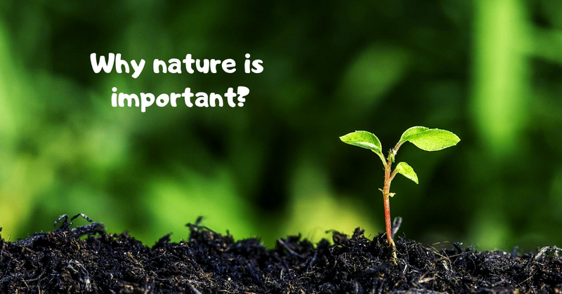
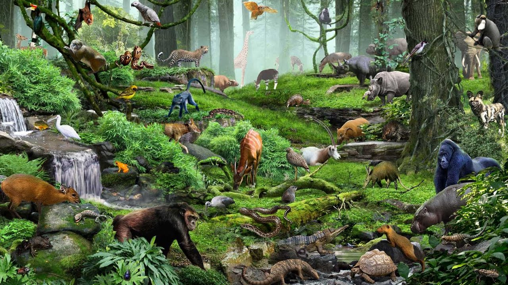
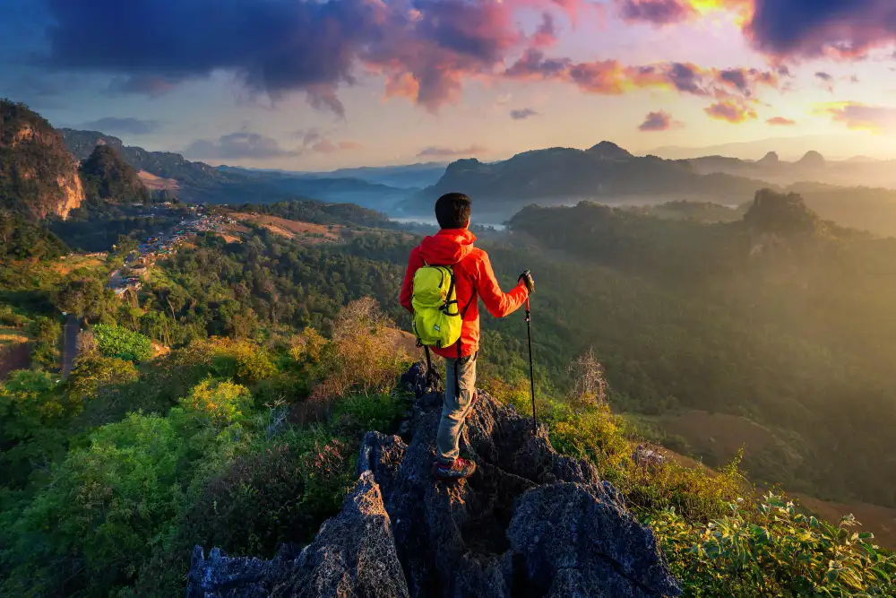

Student of Gayatri Vidya Parishad College of Engineering

1.Nurtures life on the planet

The Earth and everything on it result from years of natural processes-the Earth’s atmosphere, gravity, life-giving properties in the soil, photosynthesis in plants, temperature regulation, oxygen production, and the water cycle enables humans to drink clean water. Nature nurtures all life, from the largest mammal to the tiniest microorganism.
2.A place to explore and discover

Nature provides a beautiful backdrop for endless opportunities to explore new things in nature, including different plants, animals, rocks, and landscapes. Also, exploring nature leads to discoveries about ourselves like- we may realize we are capable of more than we thought or enjoy things we didn’t know existed.
3.Stimulates our senses
Spending quality time alone and going on a trip can benefit your health and well-being in several ways. It will help you rejuvenate while also demonstrating the strength of your body.
Individuals spending more time in nature are better tuned to their surroundings, leading to many advantages. Various sounds, aromas, colors, textures, and peace can all be found in natural settings. Hence it boosts our senses, which makes us more mindful and sharpens our senses. It is among the main advantages of nature in human life.
4.Improves our mood
Nature makes us feel good; whether surrounded by plants, trees, and wildlife or just sitting near a water body, nature positively impacts our mood. Spending time in nature improves moods as much as antidepressants. It is one of the top benefits of nature for our life.
It’s an easy and free way to boost our happiness and well-being. Moreover, it helps us see the world from a new perspective. It can provide a mental break from daily stressors and routine in a way that reminds us why it’s great to be alive!
 go home
click here
News website1
News website2
News website3
go home
click here
News website1
News website2
News website3